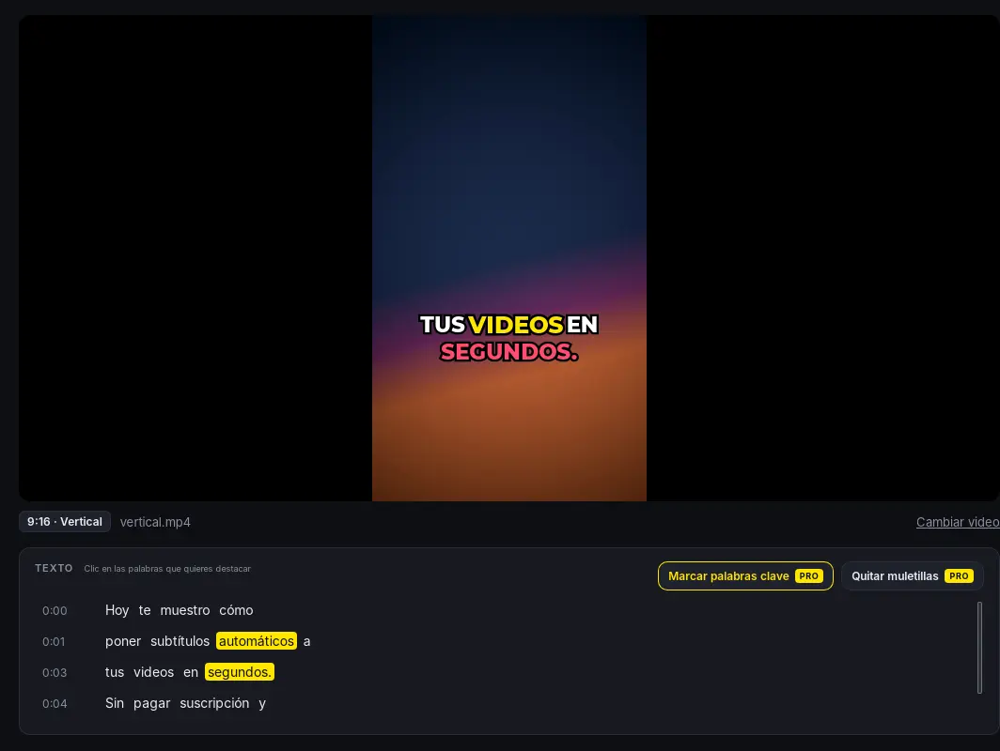
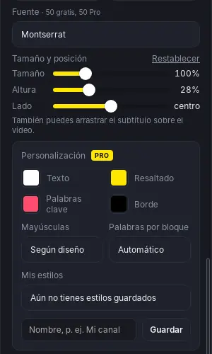
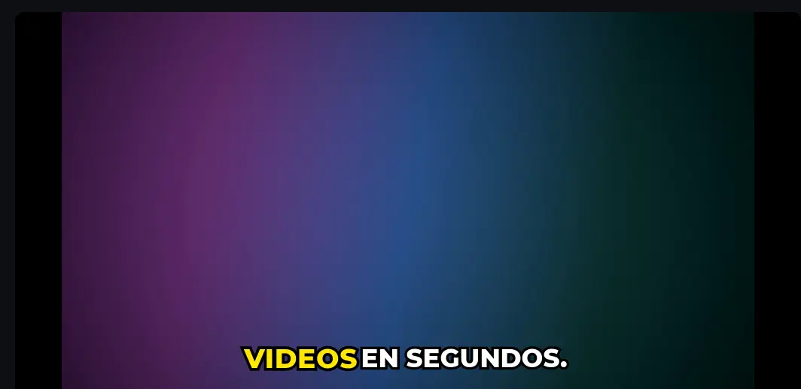

KibianSubs escucha tu video, escribe lo que dices y le pone subtítulos animados listos para TikTok, Reels, Shorts y YouTube. Todo pasa en tu computador: tu video nunca se sube a internet.
Windows 10 y 11 · Español e inglés · Videos verticales y horizontales
⬇️ descargas y contando
Así se ve KibianSubs: tu video a la izquierda, el texto abajo y los diseños a la derecha.
Sin cuentas, sin subir archivos, sin editar línea de tiempo.
Revisa el texto como en un documento. Si algo quedó mal escrito, haces clic y lo corriges.


Elige entre diseños listos y ajústalos hasta que se vean como tu marca.
Evita que TikTok, YouTube o Instagram te bajen el video por lenguaje. La app encuentra las groserías y las tapa en el audio y en el texto.
Sirve igual para TikTok, Reels y Shorts que para tus videos de YouTube. La app acomoda el texto a cada formato.

Nada se sube a internet. Ideal para contenido que todavía no publicas.
Nada de mensualidades ni minutos contados. Haz todos los videos que quieras.
Instalas, abres y empiezas. No pide correo ni contraseña para usarla gratis.
No es un editor de video. Hace una sola cosa y la hace bien: subtítulos.
Empieza gratis. Si te gusta, pasa a Pro con un solo pago, sin mensualidades.
Precios públicos en USD de los planes de pago, consultados en octubre de 2026. Pueden variar según el país y cambiar con el tiempo, y cada app ofrece funciones distintas. Captions, CapCut y Submagic son marcas de sus dueños, sin relación con KibianSubs.
0 USD
Para siempre, sin límite de videos
19,99 USD
Sin suscripción · Licencia sin vencimiento · Hasta 2 computadores
🛡️ Garantía de 14 días · 🔒 Pago seguro con Lemon Squeezy
No. KibianSubs transcribe y exporta todo dentro de tu computador. Solo se conecta a internet para descargar el modelo de voz la primera vez y para activar la licencia Pro.
No hace falta tarjeta gráfica. En un PC normal con Windows 10 u 11 funciona bien; los más rápidos terminan antes.
Los subtítulos funcionan en español e inglés, y la app puede detectar el idioma automáticamente. Con Pro también puedes traducirlos al inglés. La censura automática de groserías funciona en español e inglés; en otros idiomas puedes marcar las palabras a mano.
Por ahora solo en Windows 10 y 11.
Sí. Windows muestra ese aviso con programas nuevos que todavía no conoce. Toca “Más información” y luego “Ejecutar de todas formas” para instalar KibianSubs.
Al generar los subtítulos, la app encuentra las groserías y las marca. Al exportar, las tapa con un pitido o silencio (gratis) o con la palabra al revés, un sonido divertido o tu propio sonido (Pro), y en el texto salen como ****. Puedes marcar o desmarcar palabras a mano antes de exportar.
La clave sirve en 2 computadores. Para pasarla a otro, usa “Desactivar en este equipo” en el primero.
Sí, dentro de los 14 días siguientes a la compra. Escríbenos y lo gestionamos. Más detalles en los términos de uso.